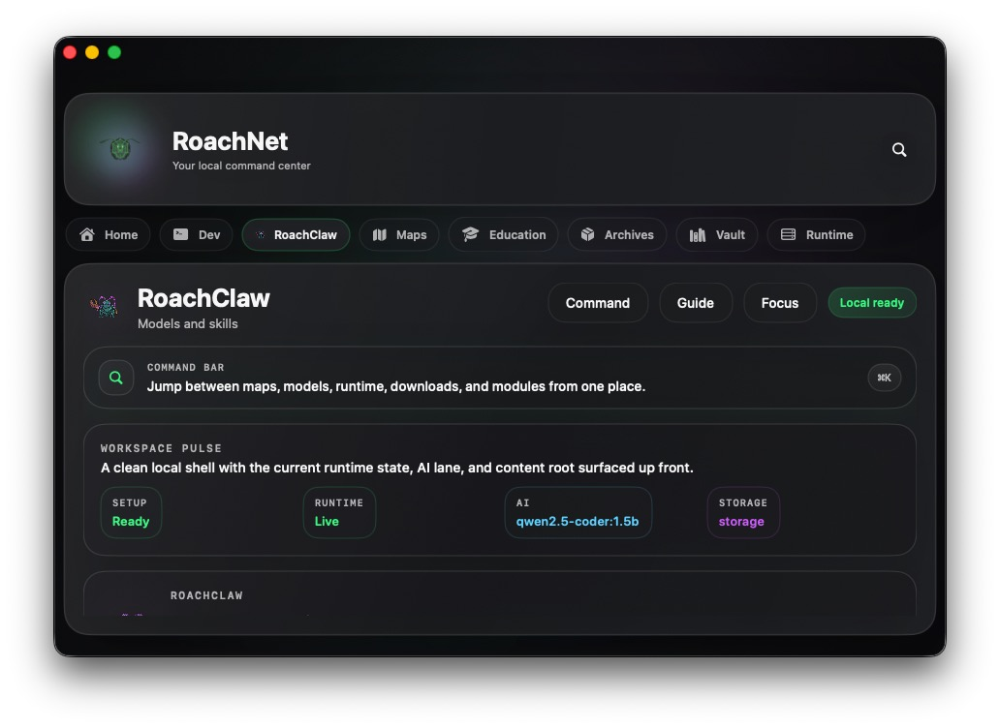
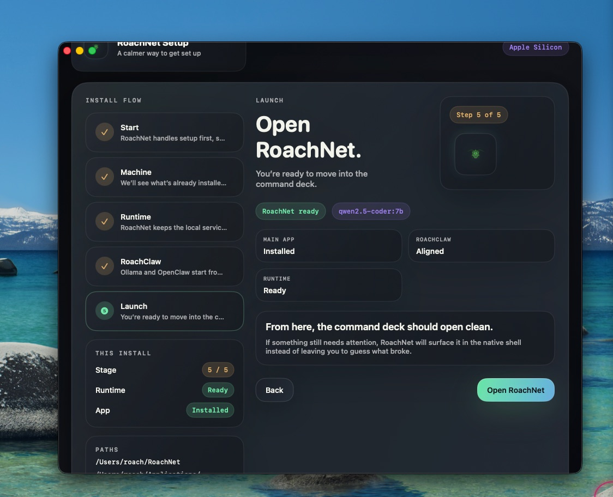

RoachNet is for people who treat their desktop like a long-running session and expect their tools to show up every time. The internet becomes a nice-to-have, not a requirement.
RoachNet
Your stuff, still here when the internet isn’t.
RoachNet is a local-first home base for people who actually live on their machines. Offline maps, local AI, a contained dev workspace, and your notes all sit together on your box instead of in somebody else’s tab.
Built for Apple Silicon, Windows 11, and Linux desktops.
--:-- --
Checking link
Storage estimate pending
Local time and storage are estimated in-browser until the native app is installed.
What RoachNet is
A home base for your brain when the network taps out.
RoachNet keeps the important things close: where you’re going, what you’re building, and the ideas you don’t want to lose in some random cloud tab. It is one calm command center that keeps working whether the connection is great, bad, or gone.
Bring your stack home.
Run models, tools, and services in a local runtime that lives on your desktop, not in a distant region.
Local AI that knows your machine.
RoachClaw glues OpenClaw and Ollama into a sane local AI setup with a fast default model, a contained install path, and an optional cloud lane.
Code, shell, and AI assist in one native lane.
Dev keeps project files inside the RoachNet vault, pairs them with a built-in shell, surfaces inline coding suggestions, and keeps RoachClaw assist close enough to be useful without throwing you into another app.
Your reference shelf, unplugged.
Routes, checklists, lyrics, patch notes, and late-night ideas live in one offline-ready vault instead of scattered folders and lost tabs.
An AI stack in a folder, not smeared across your OS.
RoachNet keeps the app, data, workspace, and services grouped so you can back it up, move it, or nuke it in one shot.
Screens
What life with RoachNet actually looks like.
These are direct captures from the native shell and setup flow. No mockups, no concept art, just the real UI you get after install.
Home
The actual command grid.
Home is the first pane in the native shell, with the same command bar, metric cards, and launch grid the user lands in after setup. The command bar can also surface over the desktop on Shift-Command-R without waking the full shell.

Dev
The native coding workspace.
The Dev lane keeps project files inside the RoachNet vault, pairs them with a built-in shell, adds inline code suggestions, and brings RoachClaw assist plus secrets management into the same native surface.

RoachClaw
The local AI workbench.
RoachClaw aligns contained Ollama and OpenClaw services, keeps a cloud lane optional for fast first boot, and exposes the model/store path from inside the native shell.

Setup
The installer flow the user actually starts in.
The setup app stages the runtime, checks the machine, and gets the contained RoachNet shell ready before the first real session opens.
Where RoachNet shines
Built by someone who’s been burned by bad Wi-Fi more than once.
RoachNet is for people who still expect their tools to work when the network is flaky, slow, or offline. The internet becomes a nice-to-have, not a requirement.
The router is on its experimental phase again.
Keep reference docs, AI tools, project files, notes, and routing maps in one offline-ready workspace. Your session doesn’t have to care what the ISP is doing.
Remote sessions on hotel Wi-Fi.
Bring maps, checklists, local AI, and your vault with you so a bad network just means slower memes, not blocked work.
Cloud tools paused? You don’t have to be.
RoachNet runs on your machine, so your work keeps moving when hosted tools slow down, rate-limit, or disappear for maintenance.
Why RoachNet
Built for people who keep going.
RoachNet is for producers, engineers, and builders who treat their desktop like a long-running session and need their tools to show up every time.
RoachNet stays out of your way until you need it, then gives you exactly what you need, fast.
Local models first.
Your prompts still flow when the internet doesn’t.
Contained by default.
Your stack stays grouped, portable, and easy to clean up when it’s time to start fresh.
Designed to disappear.
It stays quiet until you need it, then acts like the home base you already trusted.
Download
Grab RoachNet and keep your tools close.
Install RoachNet on your desktop and keep the important stuff tied to your machine, not to a connection.
Support
Help keep AHG Records LLC and RoachNet moving.
If RoachNet saves you time, keeps a session alive, or helps your work stay local, you can throw a little fuel back into the engine here.
Back the label behind RoachNet.
Support the broader AHG Records LLC work that funds releases, tools, experiments, and the long tail of keeping independent projects alive.
Secure hosted donation page with PayPal and Venmo support.
Help fund faster fixes and new local-first features.
Support native installer work, local AI improvements, mirror-backed downloads, and the next rounds of runtime and UX polish inside RoachNet.
The same hosted donation page also supports Venmo when it is available for the visitor.